How to install VS Code in an Android Phone?
In this post, we will see how you can install VS Code on an Android device. We will use one of the most
popular Android terminal applications called Termux
Updated August 2023: There have been some changes with Termux due to which the official play store
app of Termux doesn't
work but don't worry I will guide you on using VS Code on your Phone.
If you are a student who wants to code on your Android device using VS Code, this might be the best setup for
you.
Follow the steps below:
Step 1 - Install termux
In order to install VS Code, you will have to install the Termux app by downloading the apk using this link from f-droid.
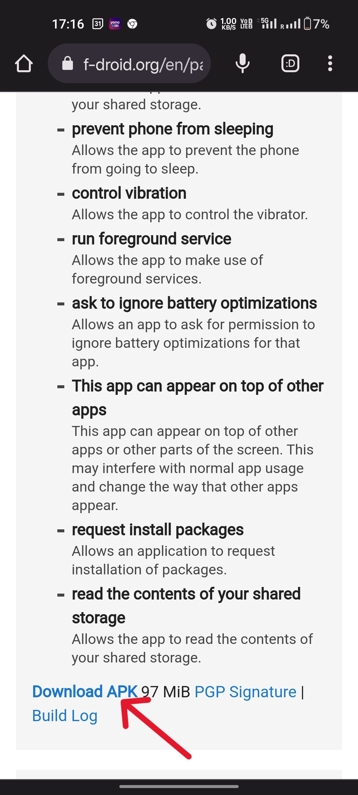
The official release available on the play store doesn't seem to get the packages updated for some reason.
Termux from Play Store won't work. This is what the official Termux GitHub
repository has to say:
"Termux and its plugins are no longer updated on Google Play Store due to Android 10 issues
and have been deprecated. The last version released for Android >= 7 was v0.101. It is highly
recommended not to install Termux apps from Play Store anymore."
Open the downloaded apk and click "Open"
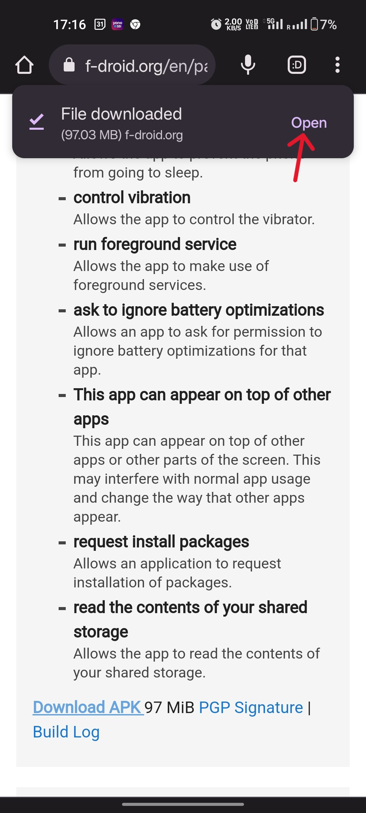
Now Install the apk file. If you are prompted to go to settings and enable installation of Apps from unknown
sources, do
that!
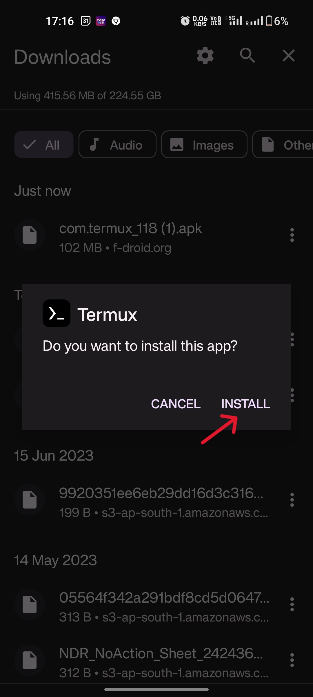
Open the Termux app, and you will see a screen like this:
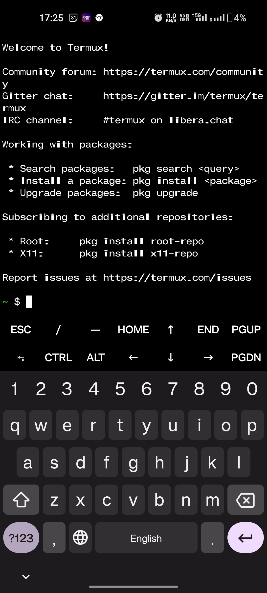
Step 2 - Install Ubuntu using Termux
Enter the following command on Termux to update the package repository:
Pkg update
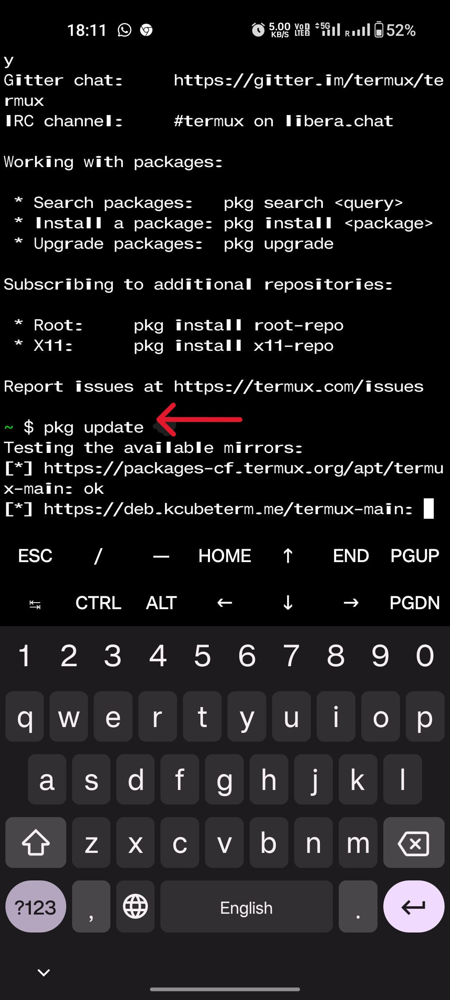
When prompted, press 'y' and then press enter. You will have to press y followed by enter every time you are
prompted
for it.
Now let's upgrade the packages using the below command in Termux
pkg upgrade
Now let's install proot-distro using the following command:
pkg install proot-distro
Now let's list all the distros we can install using proot using the following command (This command is
optional)
proot-distro list
You will see a screen like this:
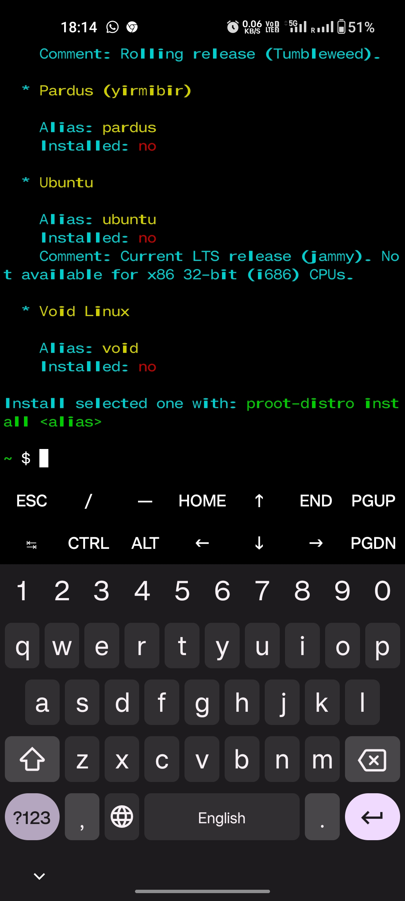
Now fire this command and Ubuntu will start to install on your Android phone
proot-distro install ubuntu
Ubuntu will begin installing. You'll see a screen like this:
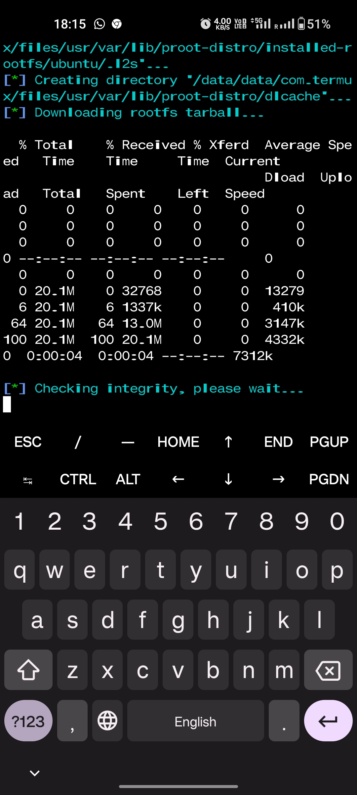
Now, start Ubuntu by firing the following command:
proot-distro login ubuntu
You will now see a root@ubuntu prompt in the terminal like this:
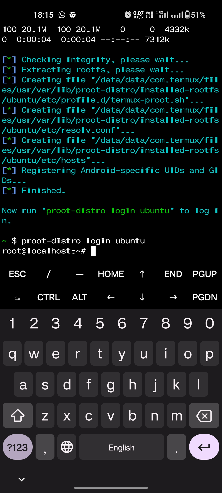
Step 3 - Downloading Code Server
While on Ubuntu run the following command:
apt update
and following command to upgrade the package repository:
apt upgrade
Press 'y' and enter whenever prompted.
Now install wget using the following command:
apt install wget
Again press 'y' and enter whenever prompted to confirm the installation. You now have wget installed!
We will now download the latest release of the code server from Github using the following command:
wget https://github.com/coder/code-server/releases/download/4.16.1/code-server-4.16.1-linux-arm64.tar.gz
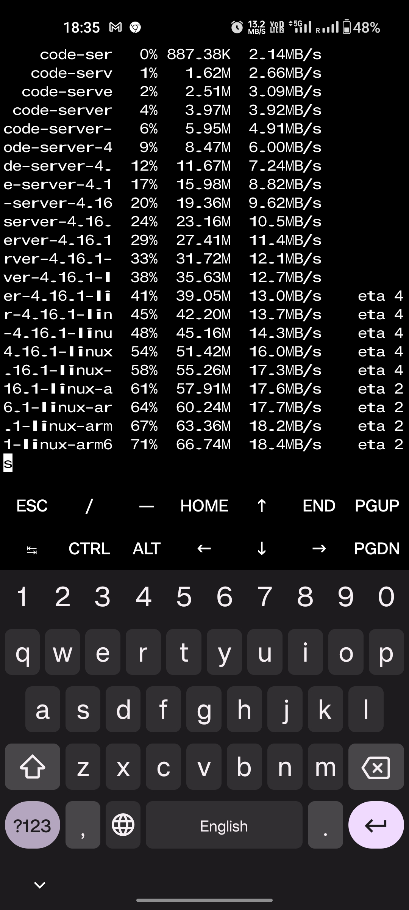
Extract the tarball using the following command:
tar -xvf ./code-server-4.16.1-linux-arm64.tar.gz
The tarball will start extracting.Wait for the tarball extraction to finish
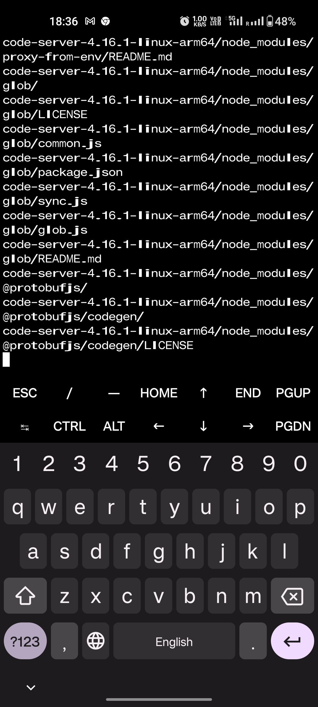
Enter the /bin folder of your code-server installation on Ubuntu (running on your phone)
cd code-server-4.16.1-linux-arm64
cd bin
Step 4 - Set up a password and start using VS Code
Setup a password for your VS Code instance using the following command:
export PASSWORD="password"
Note: I am using a very weak password for demonstration purposes as I will use this code-server
locally on my phone. Consider
using strong passwords for your serious projects
Launch the code server using the following command:
./code-server
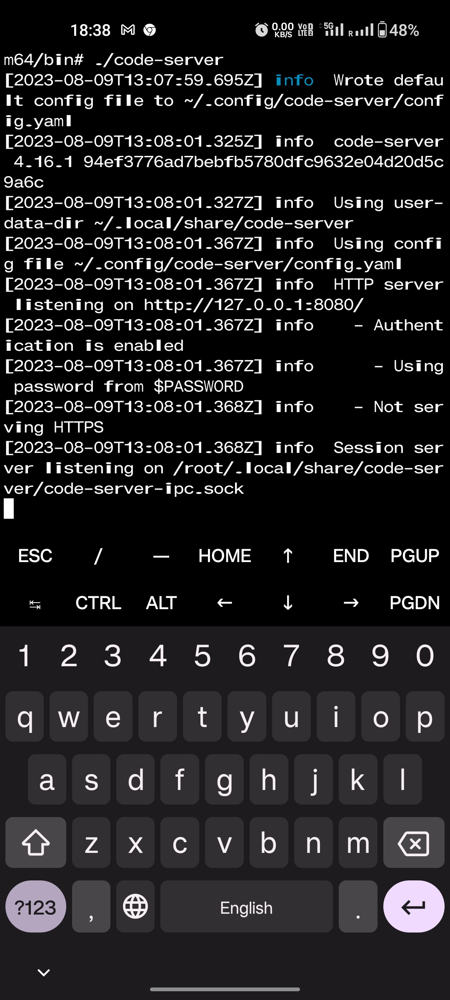
Now go to your browser. I am using Google Chrome for Android and go to localhost:8080 You will
finally see a screen like this:

After entering the password, you'll see the welcome screen:
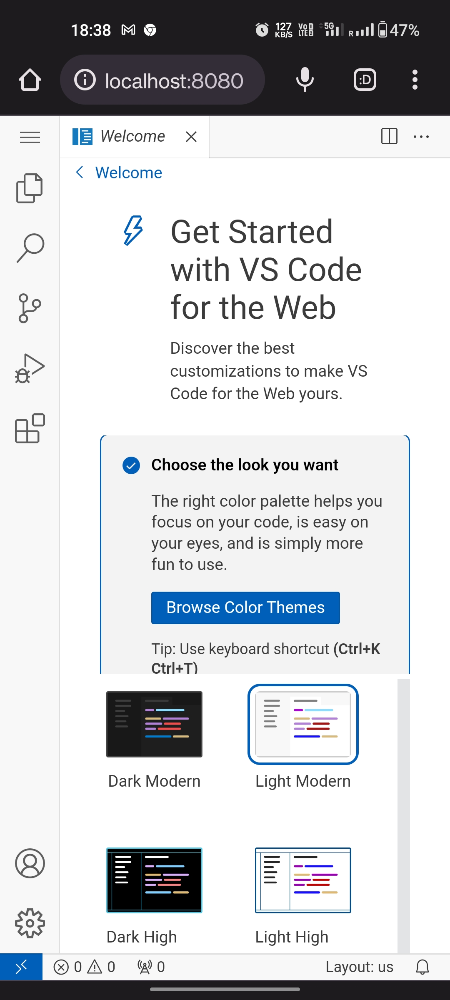
You can now start coding on your Android device using VS Code!
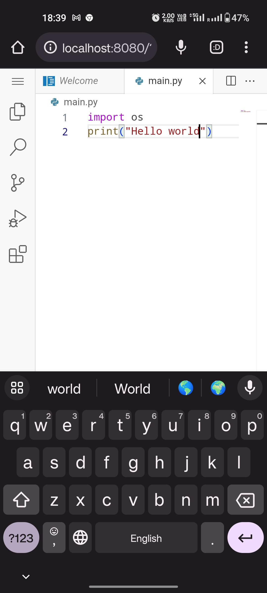
Hope that worked for your phone. Please share your experiences, ask questions, or suggest improvements in the
comments
section. Happy Hacking!
Caveats:
1. If the update command doesn't work on your Termux or you get some other network errors, try to change the
default
repo by using the command below:
termux-change-repo
Change the repository to Mirror by Grimle and try the pkg updatecommand again. It should work!
2. Whenever prompted, press 'y' and then press enter. You will have to press y followed by enter every time
you are
prompted for it.